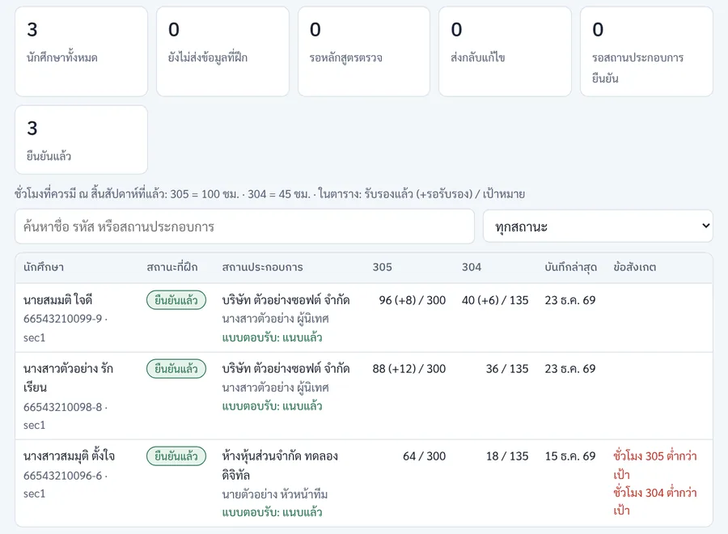
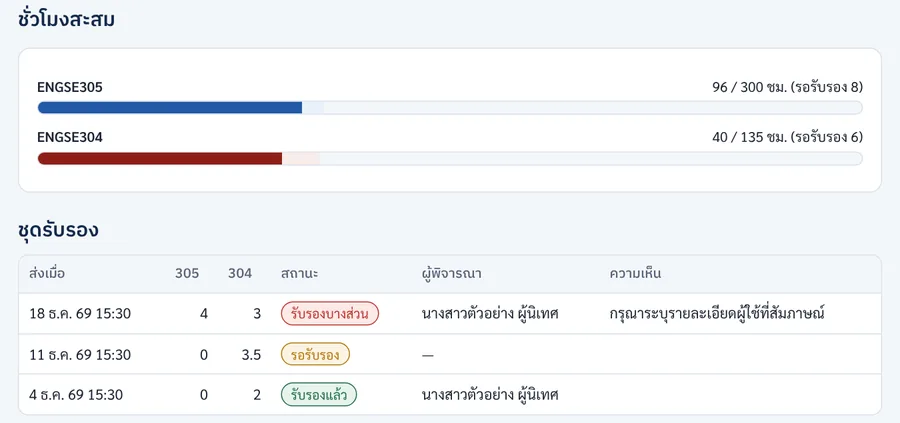

เส้นทางอาจารย์ระหว่างภาคถึงจบภาค
ตั้งแต่เปิดภาคจนส่งผล: ติดตาม logbook รายสัปดาห์ พิจารณาข้อเสนอ นิเทศ ทบทวนกลางภาค ประเมินปลายภาค และใครให้คะแนนส่วนใด
ฉบับ 1.0 · 12 พฤศจิกายน 2569 · ภาพหน้าจอทุกภาพใช้ข้อมูลสมมติ
1. ภาพรวม 16 สัปดาห์
2. ทุกสัปดาห์: ติดตาม logbook
- 1
ดูหน้านักศึกษาของฉัน
ตารางแสดงชั่วโมง 305 และ 304 ที่รับรองแล้ว (ในวงเล็บคือรอรับรอง) เทียบเป้า บันทึกล่าสุด และคอลัมน์ ข้อสังเกต เช่น "ชั่วโมง 305 ต่ำกว่าเป้า" หรือ "มีรายการถูกส่งกลับ" บรรทัดบนบอกชั่วโมงที่ควรมี ณ สิ้นสัปดาห์ที่แล้ว
ผู้ประสานงานเห็นนักศึกษาทุกคน และกด "ส่งสรุปให้ผู้นิเทศงานตอนนี้" ได้ถ้าต้องการส่งก่อนวันศุกร์

ระหว่างภาค: ชั่วโมงและข้อสังเกต - 2
เปิดรายละเอียดนักศึกษา ดู logbook และหลักฐาน
หน้ารายละเอียดมีชั่วโมงสะสม ประวัติชุดรับรอง (รับรองแล้ว · รอรับรอง · รับรองบางส่วน พร้อมความเห็นผู้นิเทศงาน) รายการ logbook และสรุปหลักฐาน (ลิงก์ รูป ปัญหา สิ่งที่ได้เรียนรู้ วันที่ไม่ได้ปฏิบัติงาน) ใช้ประกอบเกณฑ์ logbook 15 คะแนน (SE-WIL04)
นักศึกษาที่ไม่มีบันทึกเกิน 7 วัน หรือชั่วโมงต่ำกว่า 80% ของเป้า ติดต่อแต่เนิ่น ๆ

ชั่วโมงสะสมและชุดรับรอง
3. งานตามช่วงเวลา
เริ่มภาคและพิจารณาข้อเสนอโครงงาน
- 1
ปฐมนิเทศออนไลน์
จัดปฐมนิเทศ 2–3 ชั่วโมง ทบทวนสองรายวิชา การบันทึก logbook กติกาแท็ก 305/304 และกำหนดส่งของภาค
- 2
นัดพบนักศึกษาที่ดูแลครั้งแรก
นัดออนไลน์หรือพบตัว ทำความรู้จักงานตามตำแหน่งและโจทย์โครงงาน ตกลงช่องทางติดต่อ และนัดติดตามงานโครงงานทุก 2 สัปดาห์
- 3
รายงานตัวและแผนงาน 15 สัปดาห์ (SE-WIL03) และติดตามผู้ที่ยังไม่บันทึก logbook
ตรวจว่านักศึกษาทุกคนส่งแผนงานที่ผู้นิเทศงานยืนยันแล้ว ใช้แผนนี้ตรวจความสอดคล้องของแท็ก 305/304 ตลอดภาค
- 4
พิจารณาข้อเสนอโครงงาน (SE-WIL05)
นักศึกษาส่งข้อเสนอที่ที่ปรึกษาร่วมรับรองโจทย์แล้ว ที่ปรึกษาและกรรมการให้คะแนนข้อเสนอ 10% ของ ENGSE304 (SE-WIL10) อนุมัติหรือขอแก้ และแจ้งผลภายใน 1 สัปดาห์ งานประจำนับเป็นผลงาน ENGSE304 ได้เมื่อระบุไว้ในข้อเสนอที่อนุมัติแล้ว
นิเทศและทบทวนกลางภาค
- 5
นิเทศครั้งที่ 1 และประชุมสามฝ่าย
- นัดสถานประกอบการล่วงหน้า ถ้าตรงวันหยุดปีใหม่ของบริษัท ให้นัดสัปดาห์ 5–6 ก่อน และใช้สัปดาห์ 8 เป็นทางสำรอง ใช้หนังสือขอเข้านิเทศตามคำสั่งแต่งตั้งของคณะ
- รับแฟ้มนักศึกษาก่อนวันนิเทศอย่างน้อย 7 วัน (แผนงาน logbook ที่รับรองแล้ว ความก้าวหน้าโครงงาน)
- อยู่ ณ สถานประกอบการอย่างน้อย 1 ชั่วโมง ประชุมสามฝ่ายกับนักศึกษาและผู้นิเทศงานหรือที่ปรึกษาร่วม
- บันทึกการนิเทศ SE-WIL06 แยกสองส่วน: ส่วน ก ENGSE305 (คะแนน 20%) และส่วน ข ความก้าวหน้า ENGSE304
นักศึกษาที่ทำงานทางไกลทั้งหมดหรืออยู่ต่างจังหวัด ใช้การนิเทศผ่านวิดีโอแบบเวลาจริงที่พาชมสถานที่ทำงาน อ่านขั้นตอนนิเทศ
- 6
ประชุมปรับเทียบเกณฑ์
อาจารย์ลองให้คะแนนงานตัวอย่างชุดเดียวกันแล้วเทียบผล 1 ครั้ง แม้อาจารย์คนเดียวทำทั้งสองบทบาท ให้คะแนนคนละแบบฟอร์มและคนละช่วงเวลา
- 7
ทบทวนความก้าวหน้า ENGSE304 และประเมินกลางภาค ENGSE305
- ENGSE304: กรรมการทบทวนความต้องการและการออกแบบ (SRS หรือ user stories และแบบจำลอง) 15%
- ENGSE305: ผู้นิเทศงานประเมินสมรรถนะกลางภาค (SE-WIL08) 10% ผ่านลิงก์ของท่าน ผู้ประสานงานติดตามให้ส่งครบ
- 8
ตรวจชั่วโมงสะสม และรายงานความก้าวหน้าโครงงาน
ชั่วโมง ENGSE305 ที่รับรองแล้วควรใกล้ 200 ภายในสัปดาห์ 10 ติดต่อนักศึกษาที่ต่ำกว่าเป้า ที่ปรึกษาตรวจรายงานความก้าวหน้า (SE-WIL07) พร้อม repository หรือเดโม
ติดตามความเสี่ยง ประเมิน และส่งผล
- 9
ระบุนักศึกษากลุ่มเสี่ยงก่อนหมดเขตถอน W และนิเทศครั้งที่ 2 เฉพาะราย
คุยกับนักศึกษาที่ชั่วโมงต่ำ งานโครงงานล่าช้า หรือมีปัญหากับที่ฝึก นิเทศครั้งที่ 2 (สัปดาห์ 11–12) เฉพาะรายที่ฝึกที่ใหม่ ทำงานทางไกล หรือมีความเสี่ยง
- 10
ส่งลิงก์แบบประเมินปลายภาคให้สถานประกอบการ
ผู้นิเทศงานประเมินสมรรถนะปลายภาค (SE-WIL08) และที่ปรึกษาร่วมประเมินคุณค่าผลงาน (SE-WIL09) ผ่านลิงก์เดิมของท่าน นักศึกษาส่งร่างรายงานให้ที่ปรึกษาและที่ปรึกษาร่วมตรวจเนื้อหาลับ (SE-WIL11)
- 11
ติดตามแบบประเมินให้ครบ และตรวจรายงานสะท้อน
- ผู้นิเทศงาน: สมรรถนะปลายภาค 30% (ENGSE305) · ที่ปรึกษาร่วม: คุณค่าผลงาน 20% (ENGSE304)
- อาจารย์นิเทศ: รายงานสะท้อนการเรียนรู้และประเมินตนเอง (SE-WIL12) 15% (ENGSE305)
แบบประเมินจากสถานประกอบการมาไม่ทันกำหนด
ให้ I ไม่ใช่ F เพราะความล่าช้าไม่ได้เกิดจากนักศึกษา หลักสูตรกำหนดวันแก้ I เอง ดูกรณีพิเศษอื่น
- 12
แฟ้มผลงาน สอบปากเปล่า และให้คะแนนโครงงาน
- ENGSE305: นำเสนอแฟ้มผลงานและแลกเปลี่ยนประสบการณ์ 10% (อาจารย์ 2 คน)
- ENGSE304: สอบปากเปล่าและสาธิต 15% (อาจารย์อย่างน้อย 2 คนและผู้แทนสถานประกอบการ ออนไลน์ได้) · รายงานฉบับสมบูรณ์ 15% · คุณภาพสิ่งประดิษฐ์ 25% (ที่ปรึกษา)
- 13
สรุปคะแนน ส่งผลการเรียน และรายงานผลรายวิชา
รวมคะแนนแยกสองวิชา ตรวจเงื่อนไขผ่าน รวมถึงชั่วโมงที่รับรองครบ 300 (ENGSE305) และ 135 (ENGSE304) หัวหน้าหลักสูตรรับรองผลก่อนส่งคณะ
ปิดภาค
4. สรุป: ใครให้คะแนนอะไร เมื่อไร
| องค์ประกอบ | % | ผู้ประเมิน | สัปดาห์ |
|---|---|---|---|
| ENGSE305 การฝึกเฉพาะตำแหน่ง | |||
| logbook และงานรายสัปดาห์ (SE-WIL04) | 15 | ผู้รับผิดชอบรายวิชา | ทุกสัปดาห์ |
| การนิเทศและประชุมสามฝ่าย (SE-WIL06) | 20 | อาจารย์นิเทศ | 5–7 |
| สมรรถนะกลางภาค (SE-WIL08) | 10 | ผู้นิเทศงาน | 8 |
| สมรรถนะปลายภาค (SE-WIL08) | 30 | ผู้นิเทศงาน | 14 |
| รายงานสะท้อนการเรียนรู้ (SE-WIL12) | 15 | อาจารย์นิเทศ | 14 |
| นำเสนอแฟ้มผลงาน | 10 | อาจารย์ 2 คน | 15 |
| ENGSE304 ปัญหาพิเศษจากสถานประกอบการ | |||
| ข้อเสนอโครงงาน (SE-WIL10) | 10 | ที่ปรึกษาและกรรมการ | 4 |
| ทบทวนความก้าวหน้า (SE-WIL10) | 15 | กรรมการ | 8 |
| คุณค่าผลงานต่อสถานประกอบการ (SE-WIL09) | 20 | ที่ปรึกษาร่วม | 14 |
| คุณภาพสิ่งประดิษฐ์ (SE-WIL10) | 25 | ที่ปรึกษา | 13–15 |
| รายงานฉบับสมบูรณ์ (SE-WIL11) | 15 | ที่ปรึกษา | 15 |
| สอบปากเปล่าและสาธิต (SE-WIL10) | 15 | อาจารย์อย่างน้อย 2 คนและผู้แทนสถานประกอบการ | 15 |
สัดส่วนคะแนนเป็นข้อเสนอของหลักสูตร รอมติกรรมการบริหารหลักสูตร ตรงกับหน้าการนิเทศและการให้คะแนน